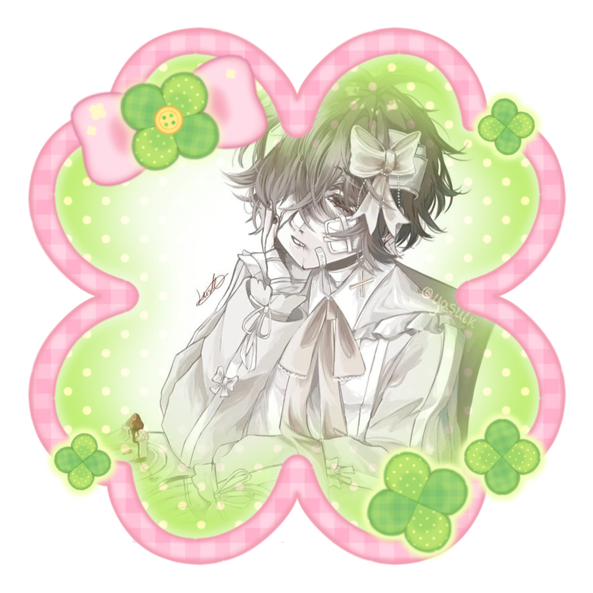
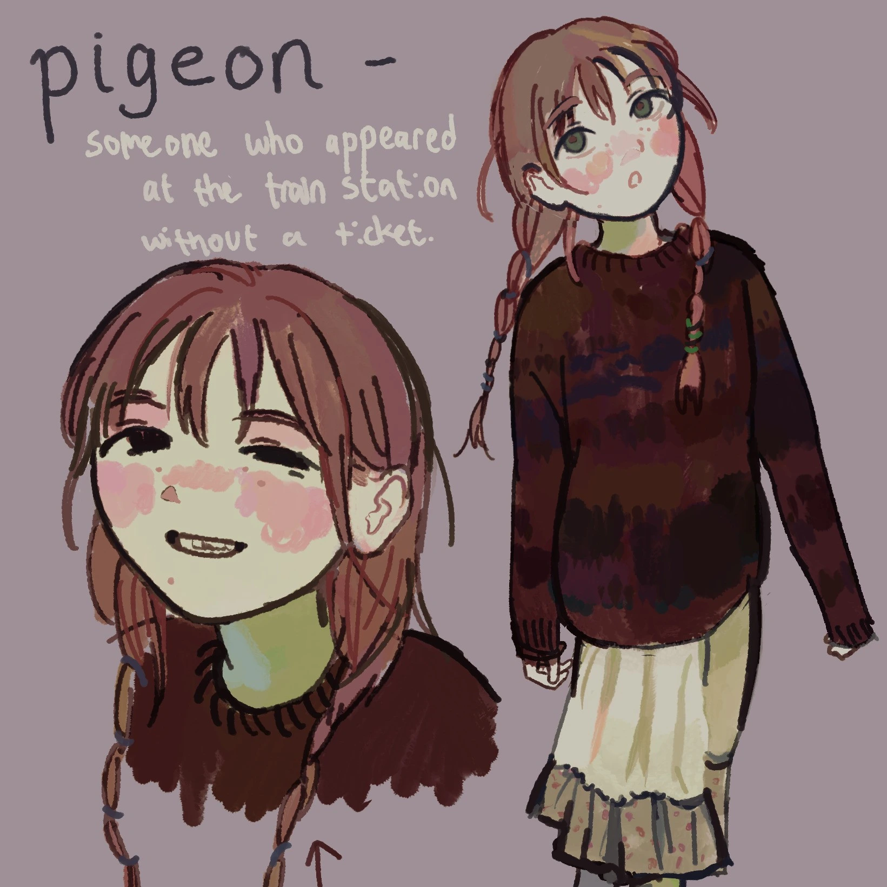
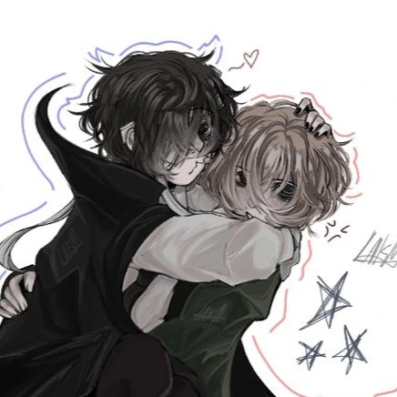
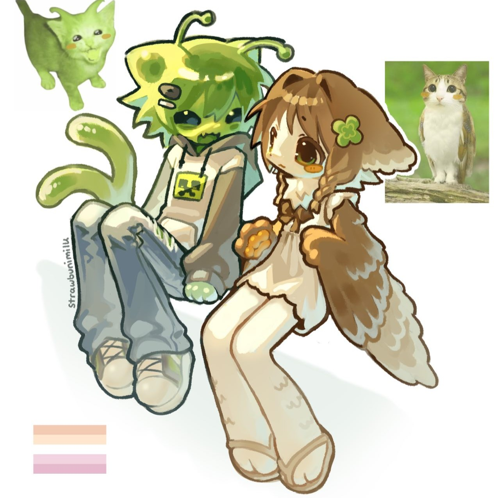

About the webmaster



Hello, I am Bianca, and this website belongs to me.
I never know what to write about myself. I have been obsessed with coding for years. I love playing video games with stories and even games like Minecraft and Stardew Valley where I spend hours doing tasks. I am a completionist, which means I feel satisfaction in achieveing everything I can (that I deem feasible to keep it fun.)
Click for a random fact about me.
Interests
General
- Technologies, telecommunications
- Angels, wings, gods/deities
- Coding
- Video Games, anime, manga
Web series
- Petscop
- ENA
Video games
- Etherane games (Hello Charlotte, TWCW█, MRSIS)
- Z.A.T.O. // I Love the World and Everything In It
- Minecraft
- ENA: Dream BBQ
- A Hat in Time
- Needy Girl Overdose
- Portal
Anime/Show/Movie
- Girls Last Tour
- Serial Experiments Lain
- Neon Genesis Evangelion
- Arcane
- Lucky Star
Music artists
- Shinsei Kamattechan
- Cavetown
- Ghost and Pals
- Guchiry
Music genre
- Pop punk
- Rock
- Indie
- Vocaloid
- J-Rock
Questionnaires
100 webmaster questions
- 1. Please introduce yourself.
- You probably read my about me already.
- 2. How long have you been making websites?
- Since maybe 2021 - 2022 (11th grade) when I started with Carrd because I saw my friend using it. I then started learning CSS with Spacehey in 2023. Moved to Neocities in 2024 to be able to make my own completely customizable site. Now I'm on Nekoweb.
- 3. And what got you into the hobby?
- When I started on Carrd, I liked being able to have my own website to put in whatever I want.
- 4. What kind of website are you most interested in?
- Personal ones with interesting designs. By interesting, I mean cute, esoteric, denpa, those types of words.
- 5. What's your workflow? Do you plan your websites out thoroughly or do you come up with the design as you go along?
- I come up with it as I go. If I plan, it takes too long and then I feel frustrated.
- 6. Please link to your biggest inspirations.
- Needy Girl Overdose, Serial Experiments Lain, Ito, rice.place, corru.observer, Z.A.T.O // I Love the World and Everything In It
- 7. What's your favourite part about making websites?
- When I feel satisfied upon achieving a unique look that I like. And learning new ways to do things, like I've been learning grid and better responsiveness.
- 8. And the thing you struggle with the most?
- Trying to have clashing styles, I don't know how to put them together.
- 9. Do you keep the same layout on all of your pages? Or do you use different ones?
- I have the main pages which have the same layout, then specially stylized pages.
- 10. How confident are you with CSS?
- My answer here used to be "Pretty confident" but I've been learning a lot of new things from Kevin Powell videos so I feel like I'm even better now!
- 11. Do you know how to correctly use <dl>?
- Indeed.
- 12. What is your favourite HTML element?
- I don't really have a favorite.
- 13. If you're making a new web page from scratch, what is the first thing you do?
- I write the
<!DOCTYPE html>
<html>
<head></head>
<body></body>
</html> - 14. Do you know JavaScript?
- I am learning! (Happy exclamation.) I am learning the same I learned HTML and CSS which is by figuring it out as I go. A while ago I made my own script for the first time. It's to load my the bunches of site buttons on multiple pages and I only need to edit the list in one place.
- 15. How about PHP?
- No, I don't know what PHP is.
- 16. Does your website have a theme that you stick to?
- Like I said before, I've been struggling with it but I got it.
- 17. Are you more focused on content or design?
- I would like to focus more on content but I do love the design aspect too.
- 18. Do you own a domain name? If not, would you ever want to?
- I do! nogood-angel.moe Moe because I like moe and it also means loving things.
- 19. What do you think of nostalgia-focused or "retro" websites?
- I really like seeing it. It's cool that it's still around since I was not born/too young at the time.
- 20. Is your HTML valid? Do you even check?
- I didn't care before but now I do try to make it valid because it feels satisfying. Completionist brain I have.
- 21. What are your opinion on buttons and banners?
- I like them.
- 22. What do you think of button walls in particular?
- I like it too, spend three days confused just for that script for mine.
- 23. If you started over again, would you make something similar or completely different?
- Similar.
- 24. Are you envious of other people's websites?
- I don't feel envious, I think they're cool. Depending on which website, I sometimes think "Wow, that's so cool! How did they do that?" Ex, corru.observer.
- 25. What text editor do you use?
- I use Brackets.
- 26. Why do you use that one?
- It's the first one with a live preview that I found. Also it's live preview is in a completely seperate window, which I prefer.
- 27. Do you host your image files on your web server, or on another host?
- I host my images along with the rest of my site.
- 28. This might not be relevant to you, but what's your opinion on the Neocities vs. Nekoweb debate?
- Both have different things they're good and bad for. What affects me the most was not being able to use external scripts on Neocities so that was part of the reason I switched to Nekoweb. Then I left Nekoweb because they piss me off and I don't remember why.
- 29. How much server space would you estimate your main website takes up?
- Currently 71.93 MB uploaded, 277 MB locally.
- 30. Do you keep local backups of your files?
- Yes. I do everything locally before uploading it, and keep everything on my computer.
- 31. Do you prefer simple or highly visual websites?
- I prefer higher visual websites, if simple means text on solid colors only. But also it depends I think. I have a bit of in-between simple and decorated since I have to start simple to prevent mental block and then I add things as I go.
- 32. Do you stick to certain colours? Do you do that on purpose, or is it your subconscious?
- Yes, I have a color palette.
- 33. Have you ever thought about quitting? Why?
- No. Could never. I'm obsessed and genuinely my mental health depends on it.
- 34. Do you have many webmaster friends, or is it a solitary hobby?
- Yes. I joined a couple of Discord servers with webdevers and I've actually been able to talk to people who I thought their sites look cool, which is cool. One time was thinking and it's like when I was a kid (and still now honestly) watching friend groups of youtubers and imagining being in videos with them.
- 35. Do people in your real life know about your website?
- I have told a couple people about it but I make sure they never see the website itself. One IRL knows though.
- 36. Do you update your website very often? How often is "very often"?
- I work on it pretty much everyday. The only times there's gaps in my working on it is when I'm engaging in another hobby.
- 37. And the overall design, do you change that much? Why or why not?
- I've actually stuck to one design for a while. Achievement.
- 38. Is your website more you-focused, hobby-focused, or outside world-focused?
- Me, my interests, documenting things that have been interesting to me.
- 39. Do you do web design professionally?
- No.
- 40. If not, would you like to? And if you're comfortable answering, what do you do for work?
- Yes, but I know about that common happening of having your hobby as a job and it becomes demotivating and less fun. I want to open commissions but I'm worried about communication issues.
- 41. Do you communicate with people by email very much?
- Only for important things.
- 42. Some people reject social media and use websites as a replacement. Do you keep social media outside of your website?
- I can't let go of other social medias where artists I like are.
- 43. How about instant messengers? Do you use a mainstream one like Discord or Telegram? Or something like Matrix? Do you avoid them?
- I use Discord a lot.
- 44. Do you listen to music while you work on websites? If so, what kinds of artists?
- I do like to listen to music while I code. I like artists like Will Wood (and the Tapeworms), Kikuo, Eve, Cavetown, Marianas Trench, Ado, LilyPichu, and that's just to name a few.
- 45. Do you keep everything you make on one website, or do you have more than one?
- I have only one website.
- 46. On a similar note, do you keep to one topic on your site, or many?
- Very diverse me.
- 47. Do you present your real self, or at least try? Or do you construct a persona on purpose?
- I'd say it's my real self (without real pictures of myself.)
- 48. Have you ever made a good friend thanks to your website?
- I'm not sure to what extent makes someone online a good friend. By "good friends" in this question I assume it's aquivelent to close friend.
- 49. Are you happy with the way HTML and CSS currently work?
- Yes, even if I keep redoing it. I like learning new ways to do things so I don't mind that.
- 50. What are practices that you think people should avoid?
- When making layouts, to not use position: relative/absolute for layouts. It becomes very complicated when things change a bit. I use both flex and grid for layouts.
- 51. What about under-utilised practices, or things you think people should do more?
- Learn both grid and flex. I only learned flex until not long ago and now it's much better with both.
- 52. Do you use a lot of semantic HTML? Or are you guilty of generic structure?
- I use semantic HTML. It helps me to understand what I'm doing, and faster than writing div class everything.
- 53. Do you consider different browsers?
- I think about it, ex. I want to change my scrollbars to look the same in Firefox but I never get to it somehow.
- 54. Speaking of, what's your preferred browser? Convince your readers why they should use it.
- I now use Firefox. I prefer it over Chrome. I heard that Waterfox has no AI.
- 55. And what OS are you on?
- Windows 11. I wanted to stay on Windows 10 but my old laptop was already up to date when I got it.
- 56. Do you have a strong opinion on that, or do you just happen to use it?
- Like I said previously. I didn't want to upgrade to Windows 11 because of all the issues that happened at it's launch. I didn't trust it. A while ago I learned a bit about Linux and it's customization ability so I've been wanting to download it on one of my old laptops to try it out. I like to try experimenting with things that pique my interest.
- 57. Are your websites mobile-friendly?
- Working on it for the satisfaction.
- 58. What are your thoughts on autoplay?
- I used to have no problem with it but it has jumpscared me so much that now I would prefer it to be soft sounding or let me be aware it's going to play somehow, like a play button.
- 59. What are your thoughts on webrings? Are you in any?
- I am some and even made my own for the game Z.A.T.O. // I Love the World and Everything In It
- 60. Do you have any web shrines? What do you like to see in that sort of page?
- I have shrines in which I info dump or show particular parts of the thing I'm most interested in.
- 61. Are your websites "cliche", in your opinion?
- I don't know of any cliches when it comes to websites.
- 62. What is your ideal website? Are you striving for that, or for something else?
- Unique and very stylized to me. Completely filled with my own content, but I procrastinate.
- 63. Are you an artist? Do you draw or design your own assets?
- I don't draw enough to be called an artist but I do like to draw the things that are in my head to make them solid. I'm thinkning of drawing my own assets.
- 64. What are your favourite resource sites?
- I try to place them in my bookmarks, that page doesn't exist yet.
- 65. Is there a habit you just can't get away from no matter how hard you try?
- I struggle with originality a bit.
- 66. What's your biggest advice for a new webmaster?
- If things aren't loading correctly, first try to hard refresh your browser.
- 67. Do you keep all your styling in CSS? Or do you hard-code some?
- I have a common, then the CSS file for the main style. Style for individual pages are placed in the HTML pages.
- 68. What do you think of frameset layouts?
- I don't know what that is. W3Schools says it's outdated.
- 69. How about table-based layouts?
- I think it's complicated to do. People recommend not doing as it was only a workaround before anything better was available, like flex or grid.
- 70. Do you subscribe to the ideas of "one-column", "two-column" and "three-column" layouts? Do you use any of these?
- What I do is somewhat similar, except I name them with what the column or row is for instead.
- 71. Do you spend longer on the HTML or the CSS?
- I spend about the same amount of time on both.
- 72. Have you ever made a page with no CSS? It's useful for your thoughts.
- That's what used to be my words page, but I added CSS just to organize it.
- 73. Do you ever find yourself making layouts with nothing to put on them? Or do you only make layouts when the need arises?
- Sometimes I get ideas of layouts before I know what to do with them.
- 74. Would you consider yourself a beginner? Or advanced? Somewhere in the middle?
- I think I'm intermediate in skill level when it comes to HTML and CSS. I'm a complete beginner in JavaScript.
- 75. Do you have a habit of looking at the source code of websites you visit?
- I do if they have something that I'm curious as to how they did it.
- 76. How did YOU learn how to make websites?
- Carrd, with it's simple drag and drop. Then I learned CSS while on SpaceHey since I liked styling my profile a lot. I learned HTML when I got on Neocities. Everything I learned has always been just learning as I go, researching things as I need them. I can't just sit down and learn everything beforehand.
- 77. Do you ever force elements to do things they're not supposed to?
- I don't think so.
- 78. Thoughts on floating elements?
- I've only been using float on images and figures that are placed within bodies of text.
- 79. When you're sizing stuff, what do you use first? Do you use px, em, %, or something else?
- I mainly use px. I use the fr(fractions) in grids. Percentages sometimes.
- 80. Do you have a favourite font?
- No, I use whatever I like the look of for my layout.
- 81. Would you run a website with another person? How would that work?
- I would need to be close with the person, that we at least get along well. I want to avoid miscommunication and misunderstandings during process.
- 82. Do you surf the Web to find new personal websites very often?
- Yes I do, mostly through Neocities and Nekoweb.
- 83. Do you bookmark other people's websites? How would you feel knowing someone else bookmarked yours?
- I do have people's websites in my links page. When I see myself linked in other people's sites, I get excited.
- 84. What do you want people to be most impressed with when they see your website?
- The content and style.
- 85. Are you interested in technology outside of websites? Do you collect?
- I am interesting in coding, secret codes (puzzles could be technology,) computers things, communications/secret communications. I was in the robotics thing in school when I was little. Been on the computer since I was 4. It's life-long.
- 86. How often and for how long are you online?
- Most of my time awake, every day.
- 87. When it comes to your website, who is your target audience?
- People who might be interested in what I have going on.
- 88. Have you ever been interested in XHTML?
- Haven't heard of it so no, not before. I looked it up. It's described as a XML based HTML which is more strict in order to be more compatible with data. I'd use it if I need to. I'm not a perfectionist, although perfecting things does scratch my brain a bit because it's close to complitionist brain.
- 89. Do you program in general? Have you ever written a program for use with or on your website, not counting simple JavaScript?
- If it counts, I did program in Python language in Ren'py which is an engine to make visual novel games. That's when my coding interest started, when I was trying to mod DDLC at 14 years old on my school laptop because I saw how many mods there are. I figured it must be simple if there's so many that are low-effort.
- 90. Speaking of programs that help you make websites, what do you think of static site generators (SSGs)? Have you ever used one?
- Only one time before I understood HTML at all so I felt like I was completely confused. I think they're okay to use. My way of learning has been editing preexisting code.
- 91. Do you keep a hitcounter? Why or why not?
- I don't anymore for two reasons. First, Neocities won't let me grab my site views from outside anymore. Second, I go crazy.
- 92. Do you frequent forums? Which ones?
- I wish. I haven't really found any forums in general, let alone any that might be of my interests.
- 93. Do you write your page content directly into the editor, or do you prepare it elsewhere, like a text document or a Word document?
- Directly into the editor. The only times I wrote content elsewhere beforehand is when I end up writing something for my blog or journal that came to mind while away from my computer. I also sometimes just write the simple ideas I get so I don't forget.
- 94. Do you think you appear cool to others? A more accurate answer now: do other people ever say you're cool?
- I've been called cute a whole lot, cool a few times. Yes.
- 95. Are you embarrassed of your old work? Have you ever deleted everything out of shame?
- Not out of shame, I just wanted to change things and it didn't fit anymore.
- 96. Would you close down your website if you couldn't update it, or would you leave an archive?
- I would leave it up. I don't understand taking it down just because I couldn't work on it anymore since I personally would still like to see it anyway.
- 97. Do you reveal a lot about yourself on your website? Or are you more secretive?
- I'd say I reveal a lot.
- 98. Are you willing to reveal who your best online friend is, and/or if they have a website?
- I don't know how to know if me and people online are friends, at least when we just talk on servers.
- 99. And do you optimise the images on your website?
- I try to optimise as much as I can. I want to keep my site from lagging and too much storage use.
- 100. We're out of time! How do you feel after answering 100 questions? ....other than exhausted.
- I don't feel exhausted. This is my third time going over these.
random weird 100?naire
- 1. what is name
- Bianca.
- 2. do rocks rlly emit waves or they r like prisms or what
- Some rocks are prisms that emit rainbow waves.
- 3. wanna spend a night in nature?
- As long as it's not 3 hours in the middle of nowhere. Let's camp in the backyard.
- 4. opinions on near-visible spectre (deep ir - extreme uv/even x-ray??) and everything in-between
- Dunno what that means. Lazers are scary when they're visible.
- 5. heard of 'to russian it up' phrase? d u relate
- Never heard of it. I don't relate, I need it to be pretty (and comprehensible.)
- 6. xenospirit?
- Yeah sure.
- 7. how many unfinished projects d u have
- All of them.
- 8. won't u mind 2 give everything up right now and blend ur being w/floating wandering intergalactic megamind
- No :(
- 9. should the earth speak only one lang on daily basis (we mean primary 4 everyone), if yes then which
- The world's languages should stay as it is, not one single language. I think it's beautiful for everyone to have their own culture.
- 10. opinions on bureaucracy?
- I tried to research it (for two minutes.) From what I understand, things would be too disconnected and prime for miscommunication.
- 11. self-pressure? if ye, why
- Sometimes. Do the thing I don't want to do and get it over with so I can code.
- 12. a rlly important question. what is romantika (romantic attraction) 4 u, how d u understand the concept
- I am aroace so I don't feel it much at all. I had a crush only once. I learned that wanting to cuddle is sensual and not romantic, explains why I want to cuddle only ones I love in a platonic way.
- 13. opinions on lgbtq+ flags?
- I support.
- 14. crazy enough 2 think u can change the world?
- I could. It'd have to be big.
- 15. do we rlly should define which thing do we like more out of nearly equally loved
- I don't think so. There shouldn't be a favorite between two equal loves.
- 16. do u hate? anything?
- Mean, inconsiderate people and bullies.
- 17. if the world was cool and ai belonged 2 the earth and not big moneysuckers, 2 be used 4 no bad, would u donate smth to it, additionally think of its use
- If it were used in a way that doesn't affect the earth negatively, it would be used to automate mundane tasks like it's initial intended use.
- 18. wanna domesticate any wild animal and keep it as pet? which
- Deer.
- 19. stimming
- I clap my hands when I'm suddenly really excited.
- 20. how 2 live on low budget d u know and have u ever
- I don't know how. I think I should stop buying entirely except for food and the bills. I can easily eat very little. I can go one meal per day.
- 21. what is family, significance, is it overrated
- I do not like the shackles of having to endure their abuse just because they birthed me.
- 22. d u use custom html tags??
- No.
- 23. opinions on swearing should we rlly delete fuks from life or
- Swearing is important, emphasizes seriousness. Although you are not very intimidating if you think it is intimidating to swear every few words.
- 24. a concept of friendship 4 u, how 2 how works
- To be there for each other at any time. Able to reconnect almost instantly even after long seperation. I'm sorry.
- 25. now. count ur frnds mutuals etc etc ur allowed 2 not name them, just numbers
- 10 + 9x + 1
- 26. routines?
- I have my day's routine in my head. Depending on how strictly I need to follow it, I have a meltdown if it's severely interrupted.
- 27. breaking rules?
- I'm a bit of a rule breaker sometimes, mostly in high school, only a little bit.
- 28. what will be 100yrs later ye u can build big plans
- Summer will be too hot to survive and winter will be too cold to survive. Arctic Eggs.
- 29. opinions on spoilers?
- I don't like it. Ruins the strong feelings I get when experiencing things for the first time.
- 30. opinions on opinions?
- Everyone is entitled to their own opinions. Doesn't mean I won't feel negatively about you for having certain ones.
- 31. using stuff until dust, constantly repairing if needed?
- Yes. I can keep it going longer rather than buying a whole new one. Although it depends on the prices of each choice, and what the issue is.
- 32. experienced altered consc states?
- I experienced sleep paralysis multiple time.
- 33. wanna start over?
- Only if things could be better in this restart.
- 34. are we and u the same
- I'd say somewhat. From reading things on your site, we develop beliefs in similar manner.
- 35. been in an eternal moment
- Yeah
- 36. moonwater? opinions
- It's like Columbina.
- 37. relating 2 any ideology?
- The ones that are basically wanting peace in the world.
- 38. ok think again. ur personal concept of love/6ual attraction then
- Hold each other close, comfortably and warm.
- 39. to not leave thinking again, opinions on polyamor
- I support it only as long as it is fully communicated and all parties consent under no pressure. It would be the same logic for everything else too, but I've seen polyamory be used by certain people as an excuse to cheat on their partner which I don't support.
- 40. rate ur awareness
- Social awareness -33 unless I'm thinking everyone is thinking bad of me, although then it is still - 32.
- 41. skipping classes??
- I did try once, got found.
- 42. d u do shitposting? can u even stand it
- It can be funny.
- 43. describe ur essence of existence in vibes
- A dim star.
- 44. doomscrolling???
- Terrible.
- 45. share ur experiences of a weak/foggy mind like when undersleeping/illnesses if u have smth 2 share
- People get mad at me and/or I just cry. If possible, I lay in bed and listen to Cavetown. I think I age regress sometimes when I play Minecraft.
- 46. can u do blind typing ? or blind writing?
- I can type without looking at the keyboard. I can write by hand without looking but it get's crooked and letters merge together.
- 47. arguments r healthy 4 progress
- Maybe I'd have an answer leaning more towards yes if it weren't for the fact I have only ever known arguements as yelling and barely any good communication at all, so no.
- 48. d u experience anemoia (a nostalgia of where/when u've never been)
- Yes. I feel it when seeing certain pictures of in the middle of nowhere old looking buildings in Russia, one example, two example. At one point I thought it's probably because I live in the middle of nowhere Canada in a 200 year old house where it often is like this.
- 49. artistic nudity
- A beautiful thing.
- 50. art vents?
- It's a good way to get feelings out.
- 51. earth overpopulation
- It does cause problems, increased use of finite recourses.
- 52. any ?real ?point of ?anything? any sense
- I don't know really. Just the stuff that make me feel happy.
- 53. how it'd be 2 time travel
- I wouldn't want to do that. The butterfly effect comes to mind every time I think about time travel.
- 54. what abt teleporting
- This one is cool. Makes it quick to go to the stores I want to, and I wouldn't bother anyone to take me there both because I can't drive and the city is too much to drive in when I will be able to drive at all.
- 55. what is 'beyond our comprehension'
- I believe that nothing is beyond our comprehension, only confusing at first.
- 56. d u !rlly! know how mbti works
- Only a little bit. My friend researched it a lot.
- 57. critical thinking
- Underutilized.
- 58. avoiding? escaping? running away?
- Yeah.
- 59. opinions on pets, would/do u keep one/mult
- I want cats but dad is allergic. Instead there's cats at work that I can pet at anytime and they love me.
- 60. if u were leading a cult
- This thought spawned when, because of a joke misspelling of my name, Bianky, the friend group I was in started using it to act like I'm a religious figure to be worshiped. They named one of the groupchats Church of Bianky, one time talked about making a Bible out of it. I didn't realized I felt put off by it at the time. Then after I was gone from that group, I wanted that feeling of being worshipped by people to return, so I played Cult of The Lamb. I realized I couldn't be a cult leader since I got attached to one member and felt sad about killing him. Then when I moderated an artist's Discord server, I disliked being percieved as a higher being. I was both "loved" and feared. I just wanted to talk as equals.
- 61. what is fairy dust
- Magical, heals the world.
- 62. d u learn quickly, also is ur short-term mem fine
- I can learn fast yeah. And my short term memory is mostly good enough. It's only terrible sometimes when I'm actively thinking.
- 63. how ez is it 2 ask 4 help
- It really depends. I have to already be comfortable with whoever I'd be asking or else I'm terrified.
- 64. opinions on achieving best grades/top players spot/etc?
- I've desired to be known, seen in the top spots. It would be satisfying to be good enough for that. But it reintroduces my problem with being perceived otherly.
- 65. what is you, of what d u consist
- I'm an entity, an angel with a deffective brain, but it's okay. We're trying our best.
- 66. opinions on snow
- I like snow. It's pretty and makes the world feel lonelier.
- 67. can u tell what the junk-for-some d u collect and keep
- Old pokemon cards I have that used to belong to an uncle, there are some original 1995 base set and half of them in terrible quality but I don't care since having them feels so cool. Other thing is old video games I could buy from the thrift store. I've been taking old music CDs and video games from the basement.
- 68. the weirdest mediaprojects (books games movies etc) uve ever experienced
- All of these that I categorize as weird for this question are things that I love. I never thought of anything here as weird, but I know it's been by others. I just don't know what else to answer with. corru.observer, ENA: Dream BBQ, Serial Experiments Lain, and others.
- 69. what was ur first operating system
- I don't completely remember. I think it was probably Windows 7. I used Tux Paint and played a lot of Purble Place.
- 70. ever used incenses?
- No.
- 71. how much are 'close' and 'far' in terms of walking by feet
- Close is 30 minutes of walking maximum and far is any further.
- 72. share ur local memes/phrases/etc
- Chez pas.
- 73. opinions on money
- Expensive.
- 74. opinions on bodies
- Part of a person or thing.
- 75. what has feelings
- Everything that experiences it. (My brain is frying.)
- 76. generousity?
- Yes.
- 77. what if universe were more like a cabbage
- Would that make it that the water is inside the earth instead?
- 78. wanna lay down on the puddle?
- I don't like being wet like that.
- 79. the oldest things u have in home
- Probably the house itself. More specifically, the kitchen, living room, and the specific bedroom next to the living room. My parents have removed a lot that made it have that old style so the oldest parts are mostly the house's insides.
- 80. what did the earth forgot 2 invent/do so we are not in frutiger aero world now
- World peace.
- 81. can u be friends (named) with nature
- Yeah.
- 82. o
u
t
da
b
oxxxxxxxxxxxxx - ????????
- 83. artifical meat veggies and etc
- For lab grown meat, I would switch to it if it tastes exactly like the real stuff. I can't give up the taste of meat.
- 84. how do hyperfixes work (4 u, if applicable)
- When you lock in too hard and forget everything else like eating and going to sleep.
- 85. if u played, opinions on natlan genshin impact. if no, make a question alike and answer it
- It's really fun to play through and explore. I like Mualani and Kachina's relationship, the way Mualani always cheers her on. I played that Archon questline twice and cried both times when we returned from the Night Kingdom and Paimon flew down to hug and didn't wanna let go.
- 86. ur fashion stylee how ur meatbag is dressed
- I'm always wearing a top that is merch of my interests. The bottom when I leave the house is always the same two pair of pants that are the exact same pants, other than that it's pajama pants. Then I always have a hoodie or sweather unless it's too hot. I've been interested in fashion more now.
- 87. opinions on trolling
- I really don't like it. I've been trolled all my life. It feels terrible.
- 88. emotions???
- Too many! I don't want to cry about things that aren't that serious for everyone else because then they get mad at me and I have to hide.
- 89. wud u like 2 live alone or w/frnds community family or nowhere or
- I want to live alone or with certain friends.
- 90. cool keybinds/shortcuts u use
- My Keqing Genshin Impact keyboard has the shortcuts for the RGB lights in it and it's fun to look at. It also came with the keybinds that help when listening to music, Fn+F6 pause and unpause music, Fn+F7 previous song, Fn+F8 next song.
- 91. honorable mention:
- I need Furina banner right now or I will go insane I want Furina so bad she is good meta and also I just love her so much. I felt the same about my genshin crush Hu Tao but I already have her and I play with her for years.
- 92. to observe or to interact or
- To observe. To interact as well but that's a bit scary.
- 93. ever drew on desks walls etc??
- I drew on desks. When I was little I drew on my bedroom walls only one time because my mom made me help her clean it and I didn't get it at the time but she said "We wouldn't have to clean it if it looked any good."
- 94. can u play chess checkers cards anything alike ?
- I like chess and solitaire. I was in a chess tournament in 3rd grade but I lost fast because I can't play under the pressure of being timed. I don't play checkers but I know how to. I can also play Black Jack (without gambling) and the game that starts with black and white chips 2 each in the middle and then you add your color chips to next to the oppenants ones to switch them to your side. Those last two games was because they were in Petz Dogs 2 and I miss it where is it I can't find it.
- 95. what if no internet (it'll be back dw)
- I have games I can play without internet and I can code locally. No internet doesn't mean no electricity, and with the promise of it coming back than I'm completely fine.
- 96. if u were allowed 2 build any three buildings anywhere
- My dream house with collection full basement and an office for gaming and all the other rooms a house has. The second building will be a bunker for survival, research and different rooms for different things I want to do. Rooms where I'd bring Hatsune Miku to life, and make the Navi, and even occult, a bunch of servers and computer things, big powerful antennas, and all other stuff, like the main building in Voices of the Void. For the third building, that would have to be thought about more.
- 97. coincidences??
- I think not!! Jk coincidences exist.
- 98. what if u were replaced w/microsoft internet explorer
- Considered obsolete. I was going to say there wouldn't be much of a difference to how I'm treated by some people but I remembered the guy who wouldn't even search things that could be found quickly and he also wanted me to find the name of a song in a video when the name was in the corner of the video.
- 99. mental tuning or training a model of ur friend or what is it when u understand them w/out words
- Truely understanding each other shows deep connection between the two.
- 100. ask urself anyyy question and answer it
- Is it over for us? -- No!
{kind=link}
{kind=link}
questionnaire
- 1. time and date u started this?
- March 27, 2026 11:20 PM AST-4 (Re:passing through September 20, 2026 8:47 AM AST-4)
- 2. asl?
- No.
- 3. opinions on musicals?
- I like them, but with certain requirements. My favorite is The Greatest Showman and it is the one that made me realize it's a good one because when they suddenly break out into song, it still continues telling the story.
- 4. favorite snack?
- Candy/Chocolate
- 5. have u ever been in love?
- I've had one crush before.
- 6. favorite pokemon?
- Mimikyu.
- 7. mario kart main?
- I don't play a lot but I use different characters a lot depending on my mood in the moment.
- 8. tf2 main?
- I don't play.
- 9. do you laugh at youtube poops?
- Yes. swaws
- 10. are you listening to music right now?
- No, I am watching Youtube. I should be asleep.
- 11. favorite shape?
- ✦
- 12. do you believe in astrology?
- I think that it is intresting. I don't believe that when you're born dictates anything like good or bad people or compatibility.
- 13. do you believe in the occult?
- Yes.
- 14. opinions on vocaloid?
- I LOVE HATSUNE MIKU! I love Vocaloid! So much. Some producers I like are Guchiry, Kikuo
- 15. would you ever want to be a rockstar?
- Yeah, I'm literally Hitori.
- 16. do you easily get stressed?
- I don't think it's stress.
- 17. what is/was your favorite class in high school?
- Gardening even if all my plants died and I cried. We played Minecraft.
- 18. what pokemon type would you be? dual types are allowed lol
- Fairy and maybe Ice
- 19. rei or asuka?
- I like both of them. I relate to both of them in different ways. More Rei than Asuka, still.
- 20. favorite html tag?
- I don't really have a favorite.
- 21. are you religious?
- I'm agnostic but I do think about religious things a lot.
- 22. opinions on nightcore?
- Peak peak peak
- 23. did you go through any major phase? (emo, goth, weeaboo, etc)
- Those times never ended. It really wasn't a phase.
- 24. are you good at drawing?
- Good enough.
- 25. do you crack your joints?
- My legs snap crackle and pop sometimes.
- 26. do you read visual novels?
- Yeah.
- 27. can you sew?
- No. I did sewing class in high school and was terrible at it.
- 28. can you cook?
- Mostly. I need instructions for the most part until I know how to cook it without.
- 29. most expensive thing you've bought?
- My gaming PC.
- 30. opinions on cosplay?
- It's cool. I have a few cosplay pieces. I found Misato's jacket in a thrift store, that was really cool.
- 31. what's your most hated band/musician?
- Most country music in general. I can't think of a specific band or musician.
- 32. are you a dramatic person?
- I'm emotional, not dramatic.
- 33. what emoticon do you use most?
- Idk probably :3
- 34. can a miracle certainly occur?
- Sure.
- 35. would you let a vampire suck ur blood?
- Depends.
- 36. do you have a celebrity crush?
- No.
- 37. do you like snow?
- Yeah. It's pretty and lonely.
- 38. were you really into greek mythology as a kid?
- I probably didn't know about it yet.
- 39. what are some things you could competently deliver a speech on?
- Not competently but I can get up there and yap about whatever I'm interested as long as they listen and I get comfortable.
- 40. are you good at spelling?
- Mostly.
- 41. which touhou wud u fuk?
- I don't know any.
- 42. do you think there's going to be a robot takeover?
- It'll be a while.
- 43. HAS SCIENCE GONE TOO FAR??!?!??!?!
- In certain spots yes. In others not.
- 44. would you be an angel or devil?
- Angel. It's litterally part of my site name and I thought about it a lot.
- 45. sine, cosine, or tangent?
- distress I don't remember
- 46. do you like licorice?
- No.
- 47. whats one thing you cant stand that everyone else loves?
- 48. what books did you like as a kid?
- Goosebumps, Chester series of books, multiple books by Raina Telgemeier like Sourie, Soeurs, and En Scene.
- 49. can you play any instruments?
- No.
- 50. what song would you want to play at your wedding?
- I won't have a wedding but to still answer, TSUBASA WO KUDASAI.
- 51. do you believe in reincarnation?
- Yes.
- 52. finish the sentence: I'm just a guy who ______
- I'm just a guy who tries his best.
- 53. have you been to another continent?
- No, I've never even left my country.
- 54. whats your worst habit?
- Maybe self-harm.
- 55. favorite vegetable?
- Lettuce because I like salad.
- 56. whats something stupid that scared the shit outta you as a kid?
- Maybe it's not stupid but my friend came over and put on a video of FNAF gameplay and the jumpscares were scaring me so bad but he refused to turn it off. I needed permission to do everything so he kept saying like "Hold on" everytime I asked to turn it off. My dad had to make him turn it off. Because of that I got this lifelong fear of the dark and thinking the small lights on things is Freddy Fazbear staring at me. I slowly got better though, by gradually sleeping with less light. Now I can sleep in the dark as long as I can see anything at all.
- 57. whats one of your guilty pleasures?
- Boobies idk
- 58. would you rather be a ghost or a vampire?
- I don't want to be a vampire but being a ghost seems pretty lonely to not be seen or anything. Ghost.
- 59. what do you fear most?
- Being rejected by the world.
- 60. do you sleep with any plushies?
- Yes.
- 61. what hobby do you just not understand?
- I can't think of any.
- 62. do you like the taste of alcohol?
- I never tried it.
- 63. are you a hopeless romantic?
- No.
- 64. which deadly sin best fits you?
- I don't know, sloth maybe.
- 65. which of your physical features do you like the most?
- My eye color, blue-grey.
- 66. are your ears pierced?
- No.
- 67. have you ever been in a physical fight?
- Kind of, yeah.
- 68. where do you buy your clothes?
- Mostly merch online, or merch in Hot Topic.
- 69. where would you live if you could live anywhere?
- Some walkable city.
- 70. do believe in magic? or is it all a trick?
- Slight of hand.
- 71. have you read umineko when they cry? you should!
- I know.
- 72. what is the worst chore to do?
- Any that is forced on me for reasons that don't make sense.
- 73. what did your parents almost name you?
- Nothing that I know of.
- 74. what would you want your name to be if you were not your current gender?
- That's hard to say since I am genderfluid and still use my birth name.
- 75. what were your first words?
- Cookie.
- 76. what do you want your last words to be?
- Some funny bullshit
- 77. when did you first regularly start going online?
- At 4, because I'm counting the computer games. The first of my kindergarten pictures is me on the computer looking like I'm hypnotized by it.
- 78. what year do you miss the most?
- 2021-2022 school year.
- 79. are you psychic?
- Nah.
- 80. would you fuck a clone of yourself? you're not allowed to kill yourself.
- No.
- 81. what do you use to listen to music?
- Spotify.
- 82. whats the biggest city you've been to?
- Quebec city maybe. I don't know how big wherever we were in British Columbia was since I wasn't a year old.
- 83. favorite animal?
- Cats.
- 84. what web browser do you use?
- Firefox.
- 85. are you allergic to kitty cats???????????
- No, I'm so glad.
- 86. do you like energy drinks?
- I have one right next to me right now.
- 87. would ever spend money on tf2 unusuals/csgo skins/gacha pulls/etc
- I have spent money on Genshin Impact. None specifically for pulls since it was for the Yelan skin and I just used to rest of the Genesis Crystals on pulls to get rid of them. I got nothing anyway.
- 88. when do you usually go to bed?
- At 7 AM.
- 89. how often do you wash your hair?
- Every two days for fully with shampoo and conditioner. In between that I just use the water since it's not good to use the cleaning products on hair every single day.
- 90. would you download a car?
- Yes!
- 91. what was your favorite show as a kid?
- Pokemon.
- 92. whats the silliest hat you own?
- ENA's hat, specifically the ENA: Dream BBQ ENA.
- 93. what album/song do you're feeling angsty
- Cavetown. I know it's an artist and not just a song or album but I have a whole playlist that's just Cavetown and I've cried to it a bajillion times.
- 94. do you make OCs?
- Yes.
- 95. whats the goofiest thing you do when completely alone?
- Giggle at anything idk
- 96. do you like fireworks?
- Yes, just not the loud noise.
- 97. favorite painter?
- Ito.
- 98. favorite numbers?
- 7 and 333 and 143.
- 99. what genre of vidya gaems are you really good at? (fps, fightan, danmaku, racing, whatever)
- I'd say I'm really good at puzzle solving, and the exploration in Genshin Impact.
- 100. time and date you finished this?
- March 28, 2026 1:22 AM AST-4 (Re:passing through September 20, 2026 9:09 AM AST-4)
Artists I like

io Creator of the game Flesh, Blood, and Concrete
lai
strawbunimilk i am going to commission them weheehe *excited*Quizzes